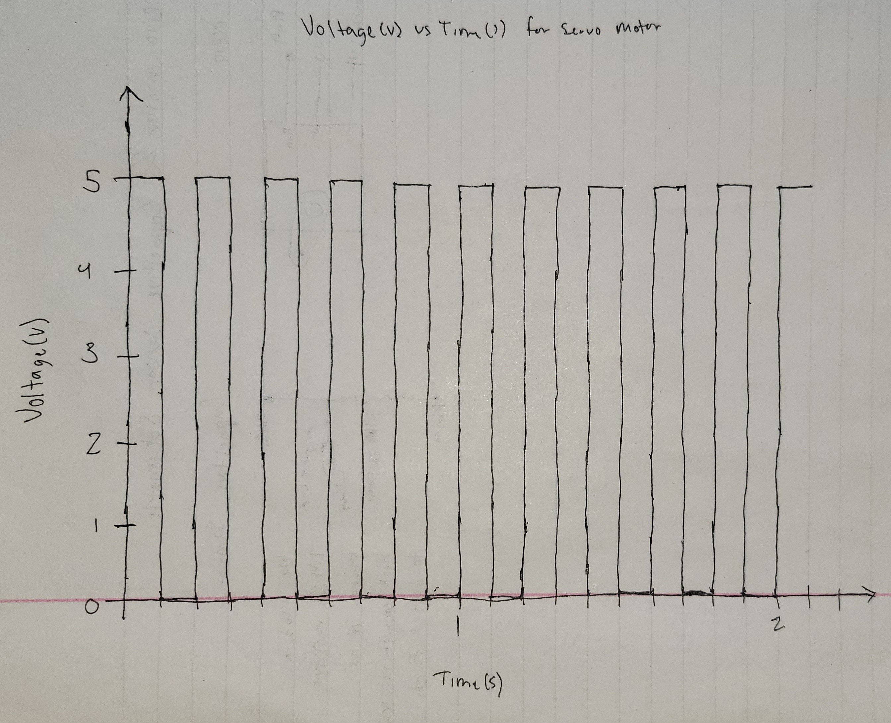

The top view of the Arduino board connected to the servo and capacitive sensor.
Schematic for the servo motor and capacitive sensor. The servo motor has a built in resistor and we connect it directly to the 5V and ground and pin 9. For the capacitive sensor we use a 1M ohm resistor between pin 2 and 4 with an alligator clip connected to pin 2 side for receiving signal from our touch. We use a 1M ohm resistor to detect the touch.
// Libraries used for the set up are capacitive sensor and servo
#include <CapacitiveSensor.h>
#include <Servo.h>
// Define capacitive sensor where pin 2 is the sensor, using 1M ohm-resistor
CapacitiveSensor cs_4_2 = CapacitiveSensor(4, 2);
// Define servo
Servo myServo;
int servoPin = 9;
// Threshold for touch detection
long touchThreshold = 1000;
void setup() {
cs_4_2.set_CS_AutocaL_Millis(0xFFFFFFFF); // Turn off auto calibrate
myServo.attach(servoPin); // Initiate the servo with the pin
}
void loop() {
long sensorValue = cs_4_2.capacitiveSensor(30); // Read sensor value
// If the value the sensor is reading higher than the threshold given activate servo
if (sensorValue > touchThreshold) {
myServo.write(180); // Move servo to 180 degrees when touched
delay(500); // Delay half a second
myServo.write(0); // Move servo back to 0 degrees
delay(500); // Delay half a second
}
}
Q1: Say you are using a servo motor you attach to pin 9. In your loop() you have the following code: for (int i=0, i<180, i++){servo.write(i); delay(100);}
Draw a graph with the X axis in seconds, for two seconds, and the y-axis the voltage at pin 9 with respect to ground. Q2: Your input device is slightly broken, leading it to give us an erroneous reading 1% of the time. How can we address this? Answer in (pseudo)code.
Function averagedSensor()
sum = 0
For i from 1 to numReadings to do
sum = sum + capacitive_sensor.read()
Delay // Small delay between readings
END FOR
// Return the averaged reading
RETURN sum / numReadings
END FUNCTION
To solve this issue we can take an amount of readings and average out the value and use it for our sensor reading.
Q3: Your input device is slightly noisy, leading the measurement to randomly deviate from the true measurement up or down by 10%. How can we address this? Answer in (pseudo)code.
// Initialize the array needed to calculate the median
Initialize readings[windowSize] = {0, 0, 0, 0, 0}
Initialize index = 0
Function readFilteredSensor()
rawValue = capacitive_sensor.read()
// Store the new value in the buffer
readings[index] = rawValue
index = (index + 1) % windowSize // Move to the next position in the array
// Copy and sort the readings array
sortedReadings = SORT(readings)
// Return the median
RETURN sortedReadings[windowSize / 2]
END FUNCTION
To account for random noise it would be best if we used median, especially because they are random readings ranging by +/-10%. Using a median we are able to pick values that are overall more reasonable.